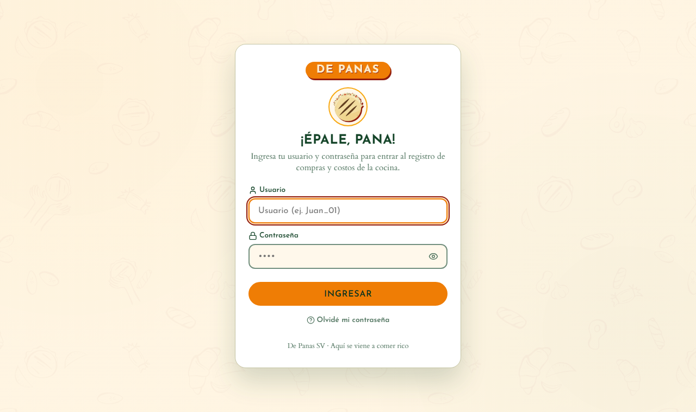
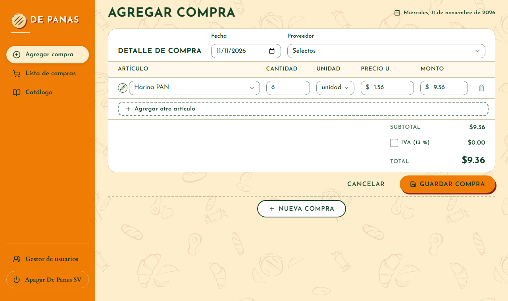
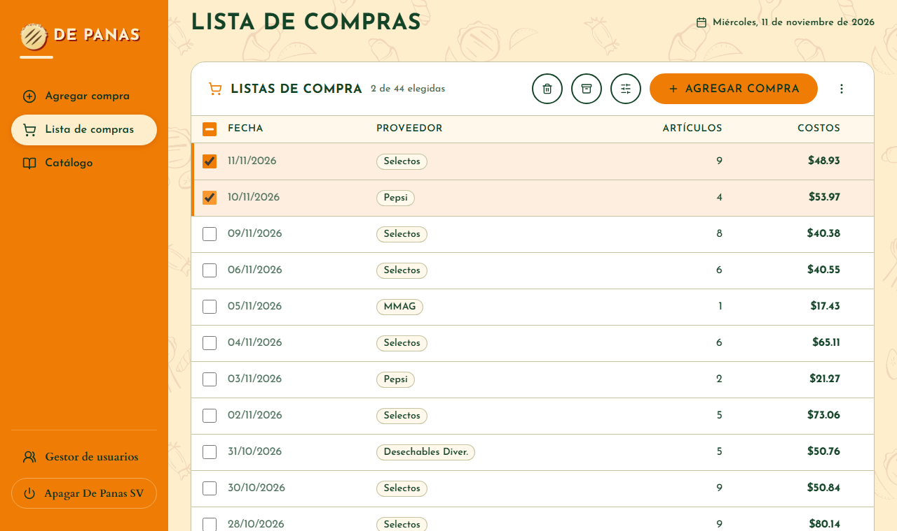
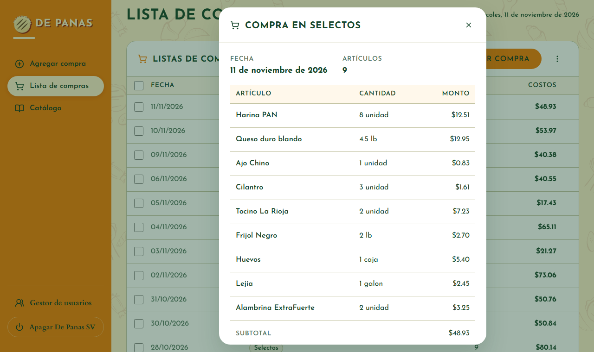
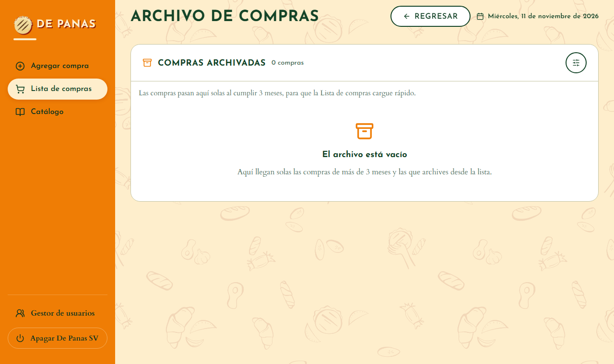
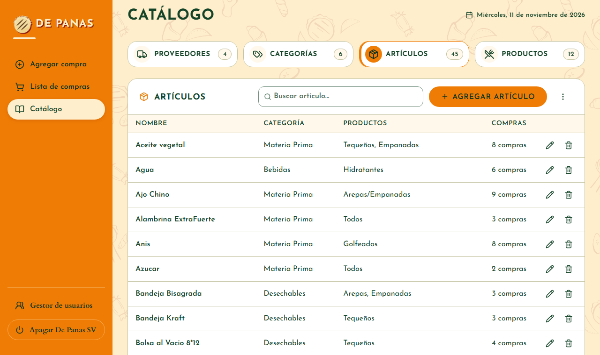
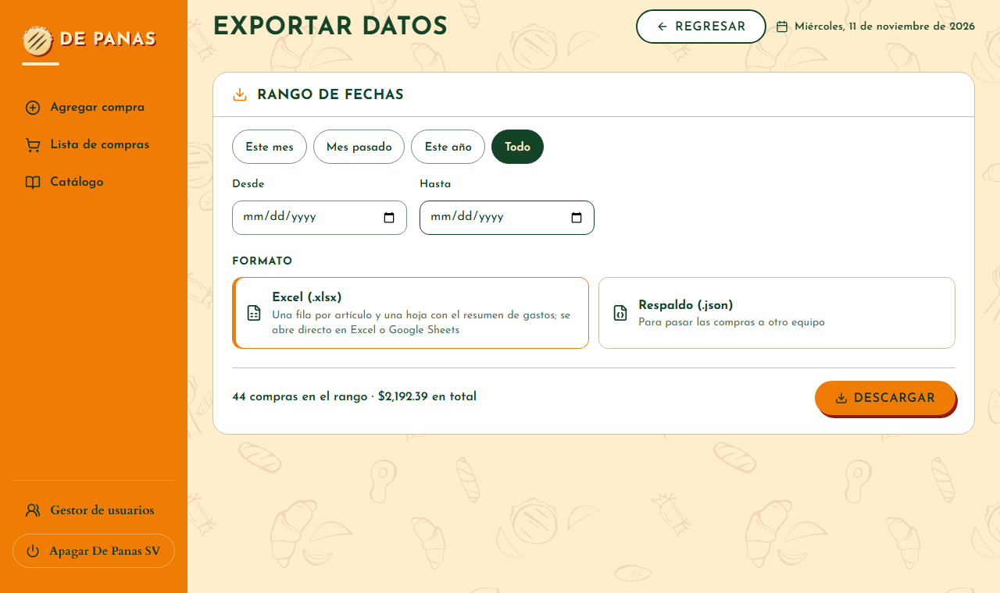

1. Abrir, entrar y apagar
- Doble clic en el acceso De Panas SV del escritorio. Se abre el navegador solo.
- Escribe tu usuario y tu contraseña y toca Ingresar.
- Al terminar el día, en el menú: Apagar De Panas SV. Cerrar la pestaña del navegador también apaga.

Para practicar sin tocar los datos reales, abre Abrir De Panas SV (demo): trae dos meses de compras de ejemplo y guarda todo aparte.
↑ Volver al índice2. Registrar una compra
Es la pantalla principal, Agregar compra. Lo siguiente aparece a medida que llenas lo anterior.
- Revisa la fecha (empieza en hoy) y escribe el proveedor. Al escribir, la opción que más coincide queda marcada: Enter la completa.
- En la primera fila escribe el artículo. Solo salen los que vende ese proveedor.
- Pon la cantidad y la unidad. El precio de la última compra se pone solo; escribe el monto o el precio unitario y el otro se calcula.
- Para otro artículo, toca + Agregar otro artículo.
- Si la factura trae IVA, marca IVA (13 %). Revisa el total.
- Toca Guardar compra y confirma.

Nueva compra abre otra compra debajo, por ejemplo de otro proveedor. Cada una se guarda por separado.
↑ Volver al índice3. Un artículo nuevo
Si escribes un artículo que no está en el catálogo, se abre un formulario corto:
- Elige su categoría (por ejemplo, Materia Prima).
- Elige en qué productos se usa (Arepas, Tequeños…). Es opcional.
- Toca Guardar y confirma. Desde ahora sale en el buscador.
Con Ahora no la compra se guarda igual y la fila queda marcada en rojo con un «!», para completarlo después. El botón + junto a la fila crea un artículo; el lápiz edita uno que ya existe.
↑ Volver al índice4. Lista de compras
Todas las compras de los últimos 3 meses, la más reciente arriba.
| Quiero… | Cómo |
|---|---|
| Ver una compra | Toca su fila. Ahí también se edita o se elimina. |
| Buscar compras | Ícono Filtrar (las rayitas): por proveedor, artículo o fechas. |
| Elegir varias | Marca sus casillas, como en el correo. La de arriba elige todas. |
| Archivar o eliminar las elegidas | Íconos Archivar (la caja) o Eliminar (la papelera), junto a Filtrar. |
| Ir al archivo, exportar o cargar | Menú ⋮ de la lista. |


5. Archivo de compras
Para que la lista cargue rápido, las compras pasan solas al Archivo al cumplir 3 meses. Nada se borra.
- Ábrelo desde el menú ⋮ → Ir al archivo.
- Para traer una compra de vuelta: marca su casilla y toca Devolver a la lista.
- Exportar siempre incluye también las compras archivadas.

6. Catálogo
Las opciones de los buscadores, en cuatro secciones: Proveedores, Categorías, Artículos y Productos.
- Agregar: el botón naranja de cada sección.
- Editar (lápiz): cambiar un nombre lo cambia también en todas las compras.
- Eliminar (papelera): las compras guardadas conservan su texto.
- En un proveedor se guardan su ubicación, teléfonos y contactos; en una categoría, qué proveedores la venden.

7. Exportar y respaldos
- En la lista: ⋮ → Exportar datos.
- Elige el rango (Este mes, Mes pasado…) o las fechas.
- Elige el formato y toca Descargar.
| Formato | Para qué |
|---|---|
| Excel (.xlsx) | Revisar los gastos. Trae una hoja con cada artículo y una hoja Resumen: total, IVA y gasto por proveedor, por categoría y por mes. |
| Respaldo (.json) | Guardar una copia o pasar las compras a otra computadora con ⋮ → Cargar datos. |

Haz un respaldo .json cada semana y guárdalo en una memoria USB. No lo envíes por correo.
↑ Volver al índice8. Usuarios y contraseñas
Solo el administrador ve el Gestor de usuarios, al pie del menú.
- Agregar usuario: nombre, usuario, contraseña y rol. El operador puede todo menos el gestor; el empleado, registrar, ver y corregir compras.
- Con el lápiz se cambian la contraseña, las pantallas y lo que puede hacer cada persona.
- Editar requisitos define cómo deben ser las contraseñas nuevas.
Cada persona entra con su propio usuario. Cambia las contraseñas iniciales la primera vez.
↑ Volver al índice9. Preguntas frecuentes
¿Necesito internet?
No. Todo funciona y se guarda en esta computadora.
Me equivoqué al guardar una compra. ¿Cómo la corrijo?
En la Lista de compras toca su fila y luego Editar. Si tiene más de 3 meses, búscala en el Archivo.
No encuentro una compra vieja.
Pasó al Archivo: ⋮ → Ir al archivo. Para tenerla otra vez en la lista, márcala y toca Devolver a la lista.
El artículo no aparece al escribirlo.
Solo salen los artículos de las categorías que vende ese proveedor. Si es nuevo, sigue escribiendo y llena el formulario que se abre. Para que un proveedor venda una categoría, edítala en el Catálogo.
Salió un aviso de que hay datos sin guardar.
Tienes una compra a medias. Registrar la guarda; Salir sin guardar la descarta.
Escribí mal la contraseña y no me deja entrar.
Tras 5 intentos fallidos hay que esperar 5 minutos. Si la olvidaste, pide al administrador que te ponga una nueva.
Cerré la pestaña sin querer.
El sistema se apagó. Ábrelo otra vez desde el acceso del escritorio; lo guardado no se pierde.
¿Cómo paso los datos a otra computadora?
En la computadora vieja: Exportar → Respaldo (.json), con el rango Todo. En la nueva: ⋮ → Cargar datos y elige ese archivo.
¿Dónde se guardan los datos?
En la carpeta %APPDATA%\De Panas SV. Borrar o reemplazar la carpeta del programa no borra los datos.